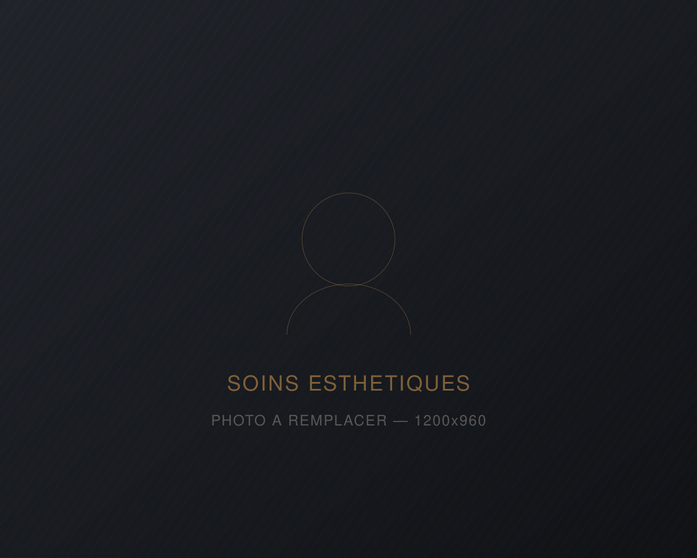
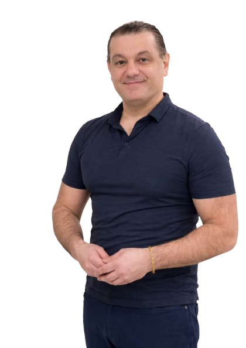

01
Hormonothérapie
TRT
Fatigue chronique, baisse de libido, perte de masse musculaire, difficulté à se concentrer. On mesure d'abord, on traite ensuite.
En savoir plus sur l'hormonothérapie TRTClinique médico-esthétique pour hommes — Montréal
Hormonothérapie, restauration capillaire et soins médico-esthétiques pour l'homme, sous encadrement médical.
Nos quatre piliers
Chaque parcours est pris en charge par un médecin expert dans son domaine et commence par une évaluation médicale complète. Pas de protocole générique : un plan bâti sur vos résultats, vos antécédents et vos objectifs.
01
Fatigue chronique, baisse de libido, perte de masse musculaire, difficulté à se concentrer. On mesure d'abord, on traite ensuite.
En savoir plus sur l'hormonothérapie TRT02
Vos propres plaquettes, concentrées en matrice de fibrine, réinjectées dans le cuir chevelu pour densifier et ralentir la chute.
En savoir plus sur le PRF capillaire03
Extraction folliculaire assistée par NeoGraft, implantation manuelle par le médecin. Permanent, sans cicatrice linéaire — PRF capillaire inclus sans frais.
En savoir plus sur la greffe de cheveux FUE04
Neuromodulateur, agent de comblement, Radiesse, Sculptra, sudation excessive. Des traitements dosés pour les traits masculins.
En savoir plus sur les soins médico-esthétiques pour homme
Le quatrième volet
La différence Au masculin
Le parcours
Vous décrivez vos symptômes et vos objectifs. On vous explique quelles options s'appliquent réellement à votre cas — et lesquelles ne s'appliquent pas.
Bilan sanguin hormonal, analyse du cuir chevelu ou examen facial selon le parcours. Antécédents, médication et contre-indications sont passés en revue.
Le médecin vous présente les options, les risques, les limites et le coût réel. Vous repartez avec un plan écrit, pas avec une pression de vente.
Intervention sur place, puis suivi planifié : ajustements de dosage, séances d'entretien, contrôle des résultats à 6 et 12 mois.
Notre équipe
Quatre professionnels, quatre expertises complémentaires — et un même principe : aucun traitement sans évaluation préalable.
Directeur médical
Médecin — médecine médico-esthétique
Il dirige la clinique et veille à ce que chaque parcours reste encadré : évaluation, indications, sécurité et cohérence des plans de traitement.

Médecin — Hormonothérapie
Médecin, médecine esthétique
Il pilote notre programme d'hormonothérapie. Son approche repose sur l'évaluation médicale personnalisée, la sécurité du patient et le consentement éclairé.
Médecin — Greffe de cheveux FUE
MD, Ph. D. (chirurgie expérimentale, McGill), CCMF
Douze années de formation médicale, un doctorat de recherche et une certification du Canadian Board of Aesthetic Medicine. Il réalise la greffe et assure lui-même le suivi.
Infirmière injectrice
Infirmière injectrice, médecine esthétique
Elle réalise nos injections de PRF ainsi que les traitements médico-esthétiques (neuromodulateur et agent de comblement). Sa signature : la retenue — juste ce qu'il faut pour rafraîchir sans dénaturer.
Questions fréquentes
Non. Ailleurs, la demande d'analyse sanguine est souvent facturée séparément — chez nous, elle est comprise dans la consultation initiale de 325 $. Vous ne payez pas deux fois pour savoir où vous en êtes.
Cela dépend du parcours. En hormonothérapie, l'énergie et la libido bougent généralement dans les premières semaines, les changements de composition corporelle sur quelques mois. En PRF capillaire, la densité s'observe à partir de 8 à 10 semaines. Pour une greffe de cheveux FUE, le résultat définitif se juge à 9 à 12 mois, le temps que les cheveux greffés repoussent.
Les soins médico-esthétiques et la restauration capillaire sont des traitements électifs, donc non couverts. Certains régimes privés remboursent le traitement de la sudation excessive. Pour l'hormonothérapie, la médication prescrite peut être partiellement couverte selon votre régime — on en discute en consultation.
Pour le PRF et les injections esthétiques, aucune convalescence : rougeurs et légères ecchymoses possibles pendant quelques jours. Pour la greffe de cheveux FUE, prévoyez quelques jours — l'enflure et les croûtes se résorbent en une à deux semaines.
Oui, et c'est souvent la meilleure stratégie. Le PRF est fréquemment associé à la greffe de cheveux FUE pour stimuler la repousse, et l'hormonothérapie se combine bien avec les autres volets. Le médecin établit l'ordre et l'espacement des interventions lors de la consultation.
Les informations de ce site sont fournies à titre informatif et ne remplacent pas une consultation médicale. Les résultats varient d'une personne à l'autre et aucun résultat ne peut être garanti. Tout traitement est précédé d'une évaluation médicale, d'une discussion des risques et d'un consentement éclairé.
Prochaine étape
Réservez votre évaluation initiale. On mesure, on vous explique, et vous décidez ensuite — sans engagement.